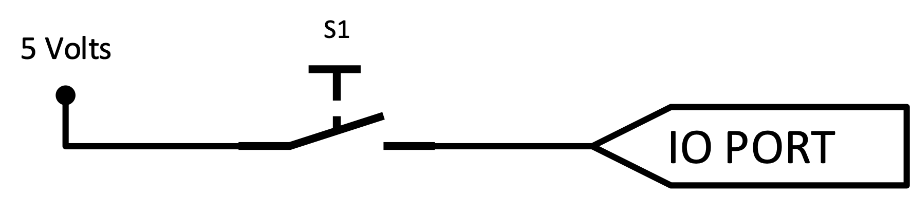

3 Architecture of the Atmel ATmega 328 Microcontroller
Presentation version of these notes.

Introduction
In Introduction to Microcontrollers and Microcontroller Architecture we described what a microcontroller is and looked at how one can be described by considering its architecture. We finished the lecture looking at The Atmel ATmega 328 Microcontroller which provides an overview of the AVR core architecture and we introduced the general purpose registers and the ALU.
Lecture Topics

3.1 Introducing the Atmel ATmega 328 MCU
Architecture of the Atmel ATmega 328 MCU

Referring to Figure 3.1, we note that
- This is an 8-bit CMOS microcontroller based on the AVR enhanced RISC architecture with 131 instructions
- It has 2KB of Internal SRAM, 32 KB of Flash Memory and 1 KB of EEPROM
- It has 32 General Purpose Registers
- It can achieve up to 20 MIPS at 20 MHz (maximum clock frequency)
- There are 8 Analog I/O Pins connected to 10-bit ADC
- There are 22 Digital I/O Pins (6 capable of PWM)
- The AVR core uses a Harvard memory architecture – with separate memories and buses for program and data.
3.2 The Status Register

3.2.1 What is the status register?

- An 8-bit register containing flags that contain information about the result of the most recently executed instruction and the current state of the processor (Figure 3.2).
- The status register is updated after all ALU instructions as specified by the instruction set reference.
3.2.1.1 Example - Effect on SREG of ADC instruction
ADC (add with carry) instruction (Atmel 2020, 24)
3.2.2 Status Register Flags
| Bit | Flag | Meaning |
|---|---|---|
| Bit 0 | Carry Flag (C) | The carry flag is set when the execution of the previous arithmetic or logic instruction produced a carry out of bit-7 or required a borrow. |
| Bit 1 | Zero Flag (Z) | The zero flag is set when the result of the previous arithmetic or logic instruction resulted in a zero |
| Bit 2 | Negative Flag (N) | The negative flag is set when the result of the previous arithmetic or logic instruction is negative |
| Bit 3 | Two’s Complement Overflow Flag (V) | The Two’s Complement Overflow Flag V supports two’s complement arithmetic. +ve + +ve = -ve or -ve + -ve = +ve |
| Bit 4 | Sign Bit (S) | The S-bit is always an exclusive or between the Negative Flag and the Two’s Complement Overflow Flag. |
| Bit 5 | Half Carry Flag (H) | The half carry flag is set when the execution of the previous arithmetic or logic instruction produced a carry out of bit-3 or required a borrow from bit-4. |
| Bit 6 | Bit Copy Storage (T) | A bit from a register in the Register File can be copied into T by the BST instruction, and a bit in T can be copied into a bit in a register in the Register File by the BLD instruction. |
| Bit 7 | Global Interrupt Enable (I) | The Global Interrupt Enable bit is set to enable interrupts. The individual interrupt enable control is then performed in separate control registers. |
3.2.3 Status Register Example

3.2.4 Status Register Demonstration

Record status of SREG at line 3.
Examples
\[ \begin{array}{lrr} \mathrm{Addend} & 0\,1\,1\,0\,1\,1\,1\,0 & 110_{10}\\ \mathrm{Augend} & 1\,1\,1\,0\,0\,0\,1\,1 & 227_{10}\\ \hline \mathrm{Sum} & & \end{array} \]
\[ \begin{array}{lrr} \mathrm{Addend} & 0\,0\,1\,1\,0\,1\,1\,1 & 55_{10}\\ \mathrm{Augend} & 0\,1\,0\,1\,0\,0\,0\,0 & 80_{10}\\ \hline \mathrm{Sum} & & \end{array} \]
\[ \begin{array}{lrr} \mathrm{Addend} & 1\,0\,0\,0\,0\,0\,0\,0 & 128_{10}\\ \mathrm{Augend} & 1\,0\,0\,0\,0\,0\,0\,0 & 128_{10}\\ \hline \mathrm{Sum} & & \end{array} \]
3.3 The Program Counter
3.3.1 What is The Program Counter?
- A program is a sequence of instructions written in a particular order to perform a specific task
- The instructions of the program are stored sequentially in non-volatile memory.
- The program counter is a register which holds the address of the next instruction to be executed
3.3.2 Example of a program
Figure 3.5 illustrates a simple program to add two numbers.
It is written in assembly code for the Atmel ATmega328 MCU. Each instruction is a programmer-friendly rendition of an 16- or 32-bit binary code that is stored at the memory locations shown.
3.3.3 Organisation of program memory
- The ATmega328 microcontroller has a 32 Kbyte flash memory which is organised into 256 pages each containing 64 Words of program.
- The program counter is 14-bits and can access each of these memory locations
0x0000–0x3FFE - The remaining addresses
0x3FFF–0x7FA5(the boot flash section) are reserved for the bootloader
Figure 3.6 illustrates the organisation of the program memory for the ATmega328.

Remember a word is 16 bits
64 (words) = 128 bytes
256 (pages) each of 128 bytes = 32 KB (or decimal 32768 / binary 32678)
Figure 3.7 shows how the program counter is used to access the next instruction.

The Least significant six bits address the instruction words within a given page. Note: \(2^6 = 64\) words which is \(128\) bytes.
The 8 most significant bits address the page in program memory in which the instruction word is to be found. Note: \(2^8 = 256\) and that \(256 \times 64 \times 2 = 32,768\) bytes.
3.3.4 The Bootloader
In short, microcontrollers are usually programmed through a programmer (specialist piece of hardware) unless you have a piece of firmware in your microcontroller that allows installing new firmware without the need of an external programmer. This small piece of firmware is called a bootloader and can allow the program to be rewritten by the microcontroller itself e.g. via an over-the-air (OTA) updates.
The bootloader also contains the reset routine (power-on-reset)
During reset, all I/O Registers are set to their initial values, and the program starts execution from the Reset Vector. For the ATmega168A/168PA/328/328P family of microcontrollers, the instruction placed at the Reset Vector must be a JMP – Absolute Jump – instruction to the reset handling routine.
3.3.5 Program Counter Demonstration
| Instruction | Number of words |
|---|---|
ADD |
1 |
LDI |
1 |
LDS |
2 |
STS |
2 |
When executing these instructions, the program counter advances by the number of words in each instruction. We will demonstrate this later.
Consider the instructions LDI (load immediate) and LDS (load from store).
Refering to the data manual (Atmel 2020) we see that the LDI instruction is a one word instruction (Figure 3.8) taking the opcode and the 8-bit data value. We also see that the LDS instruction (Figure 3.9) is a two word instruction: taking a 16 bit memory address as its operand.
3.3.5.1 LDI instruction
LDI instruction: takes a four bit opcode, a 4-bit register number (0-31) and an 8-bit value. The program counter is incremented by one when this instruction is executed. (Atmel 2020, 92).
3.3.5.2 LDS instruction
LDS instruction: takes an bit opcode, an 12-bit opcode, a 4-bit register number (0-31) and an 16-bit value which represents a data location on memory (0-65535). The program counter is incremented by two when this instruction is executed. (Atmel 2020, 93).
You can lookup ADD and STS (store to store) to confirm the details given in Table 3.1.
3.3.5.3 Example program
The assembly program shown in Listing 3.1 illustrates the use of the registers, program counter and the ADC instruction. By changing the values of the data at lines 14 nd 15, you can verify the final state of the status register explored in Section 3.2.4.
;
; Assembly - simple addition.asm
;
; Created: 11/10/2022 14:14:16
; Author : Ben Clifford
;
.device ATmega32
.equ VARIABLES = 0x0100 ;Start address in internal RAM for variables (default)
.equ PROGRAMME = 0x0000 ;Start address in Flash for programme (default)
.equ STACK = 0x08FF ;Last address in RAM to be used for the Stack (default)
.equ num1 = 110
.equ num2 = 227
.DSEG
.org VARIABLES
.CSEG
.org PROGRAMME
MAIN:
LDI R16, num1
STS 0x0100, R16;
LDI R16, num2
STS 0x0101, R16;
LDS R16, 0x0100;
LDS R17, 0x0101;
ADC R16, R17
STS 0x0100, R16;3.4 The Stack Pointer
3.4.1 The Stack
In a microcontroller, the ‘stack’ is a space in memory with a fixed origin and a variable size that can be used for temporary storage purposes, such as storing local variables and saving return address for subroutine calls and interrupts.
The stack supports two types of operations:
- Push – a data item is placed at the location pointed to by the stack pointer
- Pop or Pull – a data item at the current location pointed to by the stack pointer is removed.
The stack typically operates as a “Last In First Out” (LIFO) buffer
3.4.2 What is the stack pointer?
The stack pointer register keeps track of the top of the stack.
- A stack
PUSHcommand will decrement the stack pointer. - A stack
POPcommand will increment the stack pointer.
The AVR stack pointer is implemented as two 8-bit registers in the I/O space.
The are called SPH (stack pointer high byte) and SPL (stack pointer low byte) as illustrated in Figure 3.10.
Figure 3.11 illustrates the operation of the stack pointer as it appears to the user of the stack.
Like a box of Pringles, when you pop an item of the stack, it comes from the top. The pringle below the one you have just taken off becomes the new top. If you were to put the Pringle back, it becomes the new top. When the pringles box is empty, there is nothing on the stack and the stack pointer will be pointing at the memory address of the bottom of the stack.
3.4.3 Stack Pointer Demonstration
An example of the use of the stack is given in Listing 3.2. We will demonstrate this program in class.
;
; Assembly - Stack pointer example.asm
;
; Created: 11/10/2022 14:14:16
; Author : Ben Clifford
;
.device ATmega32
.equ VARIABLES = 0x0100 ;Start address in internal RAM for variables (default)
.equ PROGRAMME = 0x0000 ;Start address in Flash for programme (default)
.equ STACK = 0x08FF ;Last address in RAM to be used for the Stack (default)
.DSEG
.org VARIABLES
.CSEG
.org PROGRAMME
MAIN:
LDI R16, 1;
LDI R17, 2;
LDI R18, 3
PUSH R16
PUSH R17
PUSH R18
POP R16
POP R17
POP R183.5 Introduction to Microcontroller I/O
3.5.1 I/O on the ATmega328
Figure 3.12 illustrates the layout of the input-output (I/O) pins of the Atmel ATmega328 packaged as an Arduino Nano that you will be using in the lab and project.

Figure 3.13 is the schematic diagram of the Atmel ATmega328 reproduced from the reference manual.

3.5.2 MCU Inputs
Consider a switch which on one side is connected to a 5V power source and on the other side to a microntroller input.

What voltage is read at the I/O port when the switch is closed and when it is open?
3.5.3 Pull Ups
To get around this issue, microcontrollers use pull-up (or pull-down) circuitry to hold the port high (or low) (see Figure 3.14).
What voltage is read at the I/O port when the switch ‘S1’ is closed and when it is open now?

3.5.4 Ports as General Digital I/O

PORTC register
The ports are bi-directional I/O ports with optional internal pull-ups meaning they can be configured to read an input such as a switch or a sensor or to write to an output such as an LED or control an actuator. Figure 3.16 shows a functional description of one I/O-port pin, which we give the notation Pxn.
3.5.5 Configuring a pin

Recall the 64 I/O registers early on in the user data space (see Figure 3.17):
- General purpose registers –
0x0000–0x001F - Three I/O memory address locations are allocated for each port, one each for:
- the Data Registers –
PORTx, - the Data Direction Register –
DDRx, and - the Port Input Pins –
PINx
- the Data Registers –
Note: x refers to the numbering letter for the port (B, C, or D in our case).
3.5.6 Configuring a Pin - Data Direction
The DDxn bit in the DDRx Register (illustrated for DDRB in Figure 3.18) selects the data direction (input or output) of this pin.
DDRB - The port B data direction register.
- Writing logic one to
DDxn,PORTxnis configured as an output pin. - Writing logic zero to
DDxn,PORTxnis configured as an input pin. .
3.5.7 Writing to a Pin - Output
The Pxn bit in the PORTx Register (illustrated for PORTC in Figure 3.19) has two purposes dependent on the condition of the corresponding bit in the DDRx register.

PORTC - the port C data register
If the DDRx bit is configured as an output:
- Writing logic one to
PORTxndrives the pin high (on-state). - Writing logic zero to
PORTxnto logic zero drives the pin low (off-state).
3.5.8 Reading from a Pin - Input
The port pin can be read through the PINxn Register bit (illustrated for PINB in Figure 3.20.

PINB - the port B input pins address
This is independent of the setting of Data Direction bit DDxn, however is good practice to have it set.
Writing a logic one to PINxn toggles the value of PORTxn, independent on the value of DDRxn.
3.5.9 Configuring a Pin - Pull Up Enable
Providing a port is configured as an input.
If
PORTxnis written logic one when the pin is configured as an input pin, the pull-up resistor is activated.To switch the pull-up resistor off,
PORTxnhas to be written logic zero or the pin has to be configured as an output pin.
3.5.10 Basic I/O Demonstration
Code listing Listing 3.3 is an example program written in assembly that illustrates simple IO. We will demonstrate this in class. Please refer to Figure 3.21 which shows what the demo looks like.
;.EQU DDRB = 0x04
;.EQU PORTB = 0x05
;.EQU PIND = 0x09
;.EQU DDRD = 0x0A
;.EQU PORTD = 0x0B
.CSEG
.ORG 0x0200
;setup bits 2 and 3 of port D as inputs
IN R16, DDRD
ANDI R16, 0b11110011
OUT DDRD, R16
;setup bits 0 and 1 of port B as outputs
IN R16, DDRB
ORI R16, 0b00000011
OUT DDRB, R16
;both pins B0 (D8) and B1 (D9) start low
IN R16, PORTB
ANDI R16, 0b11111100
OUT PORTB, R16
;Enable the pull up resistor for bits 2 and 3 of port D
IN R16, PORTD
ORI R16, 0b00001100
OUT PORTD, R16
LOOP:
SBIC PIND, 2 ; skip RJMP if bit 2 is set (button pressed)
RJMP LED1
SBIC PIND, 3 ; skip RJMP if bit 3 is set (button pressed)
RJMP LED2
IN R16, PORTB
ANDI R16, 0b11111100
OUT PORTB, R16
RJMP LOOP
LED1:
SBI PORTB, 0
RJMP LOOP
LED2:
SBI PORTB, 1
RJMP LOOP
.EXITSummary
In this chapter we have:
Introduced a few more parts of the AVR core, namely, the status register, program counter and stack pointer and how these are used under normal operation
Started to look at I/O on a microcontroller including the concept of pull up resistors as well as some of the specific registers used in the AVR core to enable the use of both input and output device
On Canvas
Canvas module Week 2: Microcontroller Architecture and I/O, along with these notes, there is some additional self study material on canvas on page Week 2: Atmel ATmega328 Architecture Overview. This includes a video demonstration, from my former colleague Ben Clifford, of the various topics discussed in this session.
There is also a quiz on Microcontroller Architecture.
Any Questions?
Please use the Course Question Board on Canvas or take advantage of the lecturers’ office hours.
Next time
Copyright © 2021-2024 Swansea University. All rights reserved.